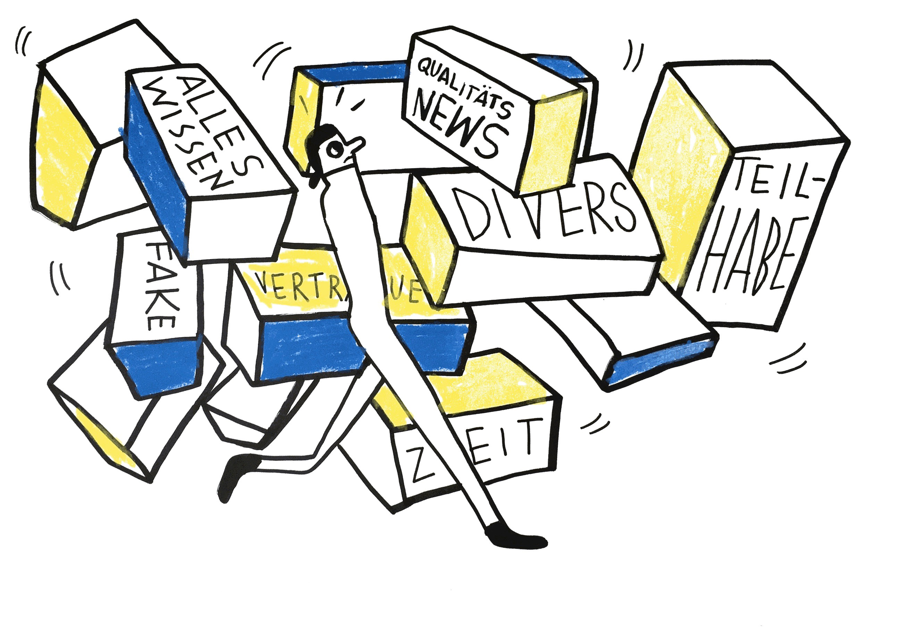

Ausblick

Herzlichen Glückwunsch, dass du 'Fakten prüfen im Netz' bis hierhin durchgesehen hast. Die Herausforderung ist nun, die vier Tipps zu Handlungsroutinen werden zu lassen.
Unser Vorschlag dazu: Wenn du das nächste Mal mit Informationen konfrontiert bist, dann versuche sie anhand einzelner oder aller vier Tipps für dich einzuordnen, bevor du dich weiter damit auseinandersetzt. Mit jeder Anwendung werden die vier Tipps dann mehr und mehr zu einer Gewohnheit für dich. Bald wirst du schon gar nicht mehr lange darüber nachdenken, sondern sie selbstverständlich verwenden.
Wenn Dir das Angebot 'Fakten prüfen im Netz' gefällt, dann informiere gerne auch Freund:innen und Bekannte darüber.